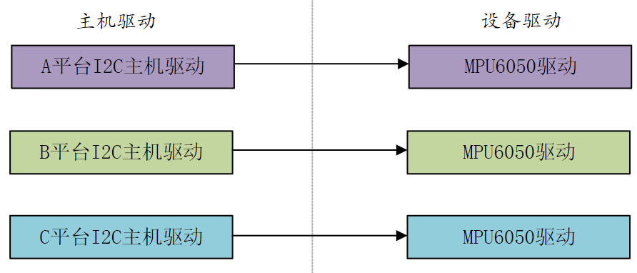
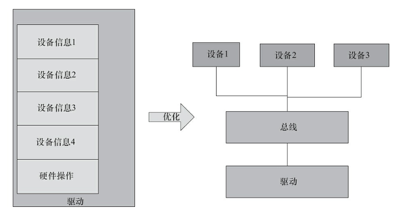
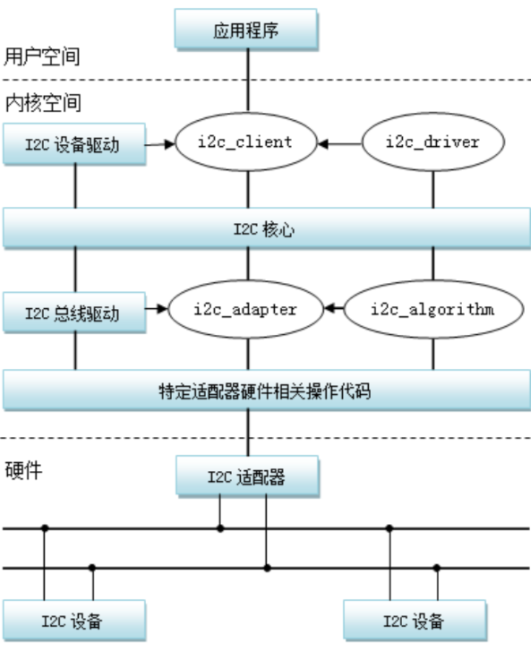
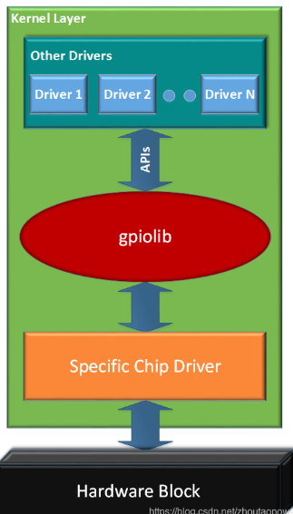

03 Linux驱动开发的软件架构
Linux驱动开发的软件架构
设备与驱动的分离
设备和驱动的分离主要指的是：板级信息和驱动的分离，所谓板级信息就是某个设备连接到了哪个I2C、哪个GPIO之类的信息
在没有引入“设备与驱动的分离”思想前，驱动中会把板级信息给写死，驱动里会包含对某个具体的GPIO等外设的操作的代码，这样的话，这个驱动就只适用于一种接线，稍微换个GPIO驱动就没法用了。而理想情况下驱动代码应该是通用的，即写好一份驱动后，不管放到什么SoC上，怎么接线都能用，所以在引入这个思想前，Linux内核中大量包含了这种垃圾代码
为了解决该问题，Linux引入了设备驱动模型，正如之前的笔记所提到的，用“总线-设备-驱动”的形式进行抽象，从而分离设备具体的信息和驱动，让一份驱动代码能适应更多的板子
设备驱动的分层
各个Linux驱动开发子系统都用到了这个理念。所谓驱动的分层，就是对原来的驱动抽象出一个中间层(一般叫核心层)，完成对于一类设备通用操作的封装。
驱动的分层具有以下2个作用：
- 对通用操作进行抽象，使得业务代码能够用统一的接口来写，增加了设备驱动的泛化性。举个例子，虽然MPU6050用i2c发脉冲就可以操作，但是不同平台使用i2c发信号的API不同，原始情况针对每个平台都得适配一下，但是如果加了一个中间层，提供统一的API来发i2c信号，那么更换平台时就不需要改MPU6050驱动的代码了，只需要适配一下统一的API就行了。LVGL里面注册画点函数来适配不同的屏幕也是一个道理
- 将一类设备的通用操作统一封装起来作为中间层，简化了设备实例驱动代码的编写
举个例子，对于input子系统，它用了一个核心层来封装此类设备的IO操作和事件上报机制，有了核心层后，具体的按键等输入设备的驱动里面就没必要在用cdev来注册IO操作了，极大地简化了代码
这样的分层化设计在Linux的input、RTC、MTD、I2C、SPI、tty、USB、Misc等诸多类型设备驱动都可以看到
- 看Linux设备驱动开发详解的12.3节
驱动核心层
核心层的主要作用：
- 1.对上提供接口。file_operations的读、写、ioctl都被核心层搞定，各种I/O模型也被处理掉了
- 2.实现通用逻辑。可以被底层各种实例共享的代码都被核心层搞定，避免底层重复实现
- 3.对下定义框架。底层的驱动不再需要关心Linux内核VFS的接口和各种可能的I/O模型，而只需处理与具体硬件相关的访问
Linux的驱动分层可能不止分为核心层和驱动实例2层，可能还有更多层，比如tty设备的线路规程层
主机驱动与外设驱动的分离
所谓主机驱动与外设驱动的分离，就是：让SoC中各控制器（主机端）的驱动只负责在总线产生波形，而外设（MPU6050等器件）的驱动只是通过标准的API来让主机端以适当的波形访问自己
即把SoC里面I2C等控制器的驱动和用到这些控制器的某外设的驱动分离
有了这样的架构后，主机端的驱动不用管自己连了什么，只需要发波形就行了；外设端的驱动也不要管自己连在哪个控制器上，只需要调通用API让控制器发波形就行了
这里面主要涉及到4个软件模块：
- 主机端驱动（由原厂提供）：根据具体的I2C、SPI、USB等控制器的硬件手册，操作具体的I2C、SPI、USB等 控制器，产生总线的各种波形
- 连接主机和外设的纽带（其实就是驱动分层里的核心层）：标准化的API，比如Linux驱动开发中，不管用的是什么硬件平台，控制GPIO、I2C用的都是一样的API。该层向上为外设端驱动/用户层提供通用的API，向下为主机端驱动提供注册的API
- 外设端的驱动：外设接在I2C、SPI、USB这样的总线上，但是它们本身可以是触摸屏、网卡、声卡或者任意一种类型的设备。当这些外设要求I2C、SPI、USB等去访问它的时候，它调用“连接主机和外设 的纽带”模块的标准API
- 板级逻辑：板级逻辑用来描述主机（I2C、SPI等控制器）和外设是如何互联的，它相当于一个“路由表”。由设备树提供
举个例子：
某I2C设备的驱动就包括：
- 主机端驱动：I2C总线驱动
- 设备端驱动：I2C设备驱动
- 连接主机和外设的纽带：I2C核心层
- 板级逻辑：设备树
再举个例子：
某些利用GPIO而没用I2C之类的协议的简单设备，其实也遵循了这套框架：
- 主机端驱动：构建
gpio_chip实例来实现硬件操作并注册到核心层 - 设备端驱动：用
gpiod描述某个具体的引脚，并用核心层提供的API控制，与控制器解耦 - 连接主机和外设的纽带：GPIO核心层：
gpiolib向下用于注册gpio_chip，向上给设备段提供API - 板级逻辑：设备树